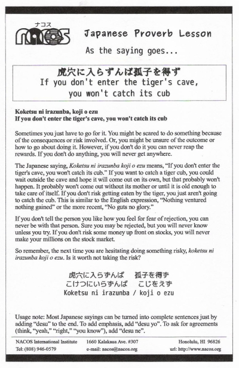

Koketsu ni irazunba, koji o ezu
If you don't enter the tiger's cave, you won't catch its cub
Sometimes you just have to go for it. You might be scared to do something because of the consequences or risk involved. Or, you might be unsure of the outcome or how to go about doing it. However, if you don't do it you can never reap the rewards. If you don't do anything, you will never get anywhere.
The Japanese saying, Koketsu ni irazunba koji o ezu means, “If you don't enter the tiger's cave, you won't catch its cub.” If you want to catch a tiger cub, you could wait outside the cave and hope it will come out on its own, but that probably won't happen. It probably won't come out without its mother or until it is old enough to take care of itself. If you don't risk getting eaten by the tiger, you just aren't going to catch the cub. This is similar to the English expression, “Nothing ventured nothing gained” or the more recent, “No guts no glory.”
If you don't tell the person you like how you feel for fear of rejection, you can never be with that person. Sure you may be rejected, but you will never know unless you try. If you don't risk some money up front on stocks, you will never make your millions on the stock market.
So remember, the next time you are hesitating doing something risky, koketsu ni irazunba koji o ezu. Is it worth not taking the risk?
Usage note: Most Japanese sayings can be turned into complete sentences just by adding “desu” to the end. To add emphasis, add “desu yo”. To ask for agreements (think, “yeah,” “right,” “you know”), add “desu ne”.

| © 1995-2013 NACOS International Institute. All Rights Reserved. |